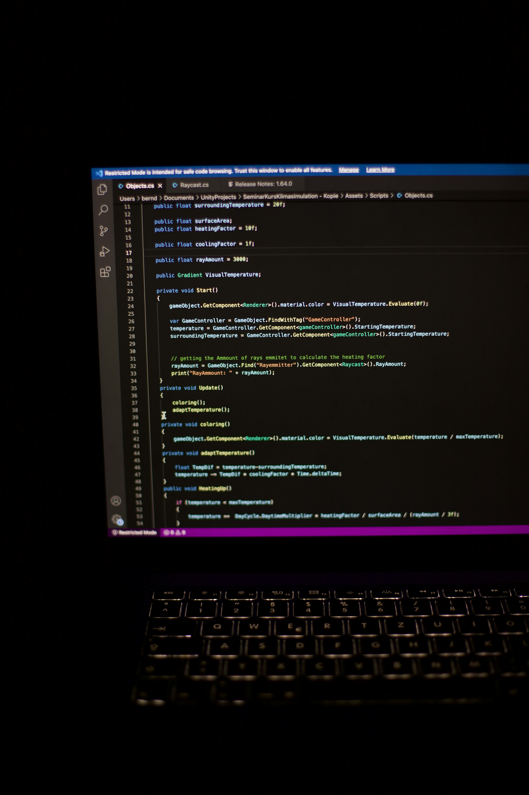

Персональний сайт-портфоліо
Навчальний вебсайт, створений за допомогою HTML та CSS. Містить інформацію про мене, навички та проєкти.
ПереглянутиСтудентка, яка вчиться на метрології та інформаційно-вимірювальній техніці
Люблю проводити дослідження, та дивитись як працюють речі під капотом.

Успішно закінчила 11 класів і вступила на бюджет
Я навчаюся на метролога в інституті фізико-технічних та комп’ютерних наук. Мені цікава моя спеціальність, бо вона поєднує точні науки та сучасні технології.
Перший курс був доволі складним, проте студентське життя наповнене позитивом, тому всі труднощі легко подолати і я вірю, що в мене все вийде.
З дитинства я дуже люблю танці і активно займалася ними, часто їздила на виступи та конкурси. Це навчило мене дисципліни, впевненості та роботи в команді. Також я люблю спорт, який допомагає мені підтримувати форму та гарне самопочуття.
Хочу розвиватися у напрямку метрології та оптики, і створювати оптичні прилади з відмінною точністю.
"Маленькі проєкти — це кроки до великих"
Навчальний вебсайт, створений за допомогою HTML та CSS. Містить інформацію про мене, навички та проєкти.
Переглянути
Командний проєкт зі створення концепції продукту та аналізу просування в соціальних мережах. Робота в Excel.
Переглянути
Навчальний проєкт з аналізу температури та вологості з використанням Python, графіків та статистики.
Переглянути